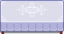
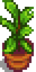

Mobilya
- Üretilen dekoratif ögeler için Üretim makalesini inceleyin.
- Ayrıca bkz.: Duvar Kağıdı, Döşeme
Mobilyalar, Marangoz Atölyesi'nde Robin'den veya Gezgin Araba tüccarından satın alınabilen ögelerdir. İki dükkan da açık oldukları her gün rastgele seçilmiş mobilyalardan teklif eder. Gezgin Araba'da mobilya fiyatları rastgeledir ancak her zaman  250–2.500g fiyat aralığındadır. Marangoz Atölyesi'ndeki fiyatları değişmez.
250–2.500g fiyat aralığındadır. Marangoz Atölyesi'ndeki fiyatları değişmez.
Bazı mobilyalar yalnızca Müzeye öge bağışlayarak, Festivallerde, Kumarhane'de, JojaMart'ta satın alarak veya diğer farklı kaynaklardan elde edilebilir. Bu istisnalar, aşağıdaki tablolarda belirtilmiştir.
İlk Çiftlik Evi geliştirmesinden sonra Robin, Marangoz Atölyesi'nde Mobilya Kataloğu satmaya başlar. Yerleştirildiğinde mobilya kataloğu ile mobilyalardan sınırsız sayıda  0g karşılığında satın almayı sağlar.
0g karşılığında satın almayı sağlar.
Küçük bir şans ile canavar öldürme, kasa kırıp açma, ağaç sallamak veya kesmek, Eser Noktaları kazmak veya elekleme gibi farklı faaliyetlerden de rastgele mobilya ögeleri bulunabilir.
Çoğu mobilya dışarıya yerleştirilebilir.[1] Ancak bazıları da Çiftlik Evi veya bir Baraka dışında bir yere yerleştirilemez. Mobilyalar, koyulabileceği yerleri yeşil kareler ile belirtir. Mobilya yerleştirilemeyeceği bir alana sürüklenirse kareler kırmızıya döner. Not: Çiftlik dışına yerleştirilen mobilyalar, bulunduğu yerden bir kasabalı yürürse onu yolundan itip çekecektir. Üretim sayfasında kasabalıların yollarını gösteren görseller bulunur.
Oyuncular; sandalyeler, oturaklar, kanepeler ve koltuklarda oturabilir.
Mobilyalar, gönderim kutusu veya tüccar/dükkan aracılığı ile satılamaz ve kasabalılara hediye olarak verilemez.
Kontroller
- Bilgisayar: Mobilya seçiliyken döndürmek -veya ögeye bağlı olarak yerleştirmek- için
 sağ tıklanabilir. Bazı mobilyalar
sağ tıklanabilir. Bazı mobilyalar  sol tık ile alınabilir ve hareket ettirilebilir.
sol tık ile alınabilir ve hareket ettirilebilir. - Nintendo Switch: Mobilyayı almak ve yerleştirmek için Y butonu ve mobilyanın yerleştirileceği yeri seçmek için R kolu kullanılabilir.
- Xbox: Yerleştirme rehberi olmadan hızlıca yerleştirmek için X veya A ve kaldırmak için X'e basılabilir - eğer yeteri kadar boş alan yoksa yerleştirmeyecektir. Bir ögeyi kaldırmak için önünde durup X tıklanmalıdır. Daha fazla kontrol için; ögeyi odada hareket ettirmek için sağ düğme ve yerleştirmek/kaldırmak için X tıklanabilir - ögenin saydam bir görüntüsü belirir ve yerleşip yerleştirilemeyeceği yeri gösteren bir yerleştirme rehberi belirir. Bazı ögeler yerleştirilmeden önce A ile döndürülebilir.
- Bütün sistemlerde bazı ombilyalar yalnızca bir alet kullanılarak veya 'alet kullanma' butonuna basılı tutularak (bilgisayarda sol tık) alınabilir.
Sandalyeler
Sandalyeler dışarıya yerleştirilebilir.
Mobilya Kataloğu'nda mevcut olan bütün sandalyeler ayrıca Gezgin Araba'dan  250–2.500g karşılığında satın alınabilir.
250–2.500g karşılığında satın alınabilir.
Oturaklar
Oturaklar dışarıya yerleştirilebilir.
Mobilya Kataloğu'nda mevcut olan bütün oturaklar ayrıca Gezgin Araba'dan  250–2.500g karşılığında satın alınabilir.
250–2.500g karşılığında satın alınabilir.
| Öge | Kaynak | Ücret |
|---|---|---|
Kanepeler
Kanepeler dışarıya yerleştirilemez.
Mobilya Kataloğu'nda mevcut olan bütün kanepeler ayrıca Gezgin Araba'dan  250–2.500g karşılığında satın alınabilir.
250–2.500g karşılığında satın alınabilir.
|
|
Koltuklar
Koltuklar dışarıya yerleştirilemez.
Mobilya Kataloğu'nda mevcut olan bütün koltuklar ayrıca Gezgin Araba'dan  250–2.500g karşılığında satın alınabilir.
250–2.500g karşılığında satın alınabilir.
| Öge | Kaynak | Ücret |
|---|---|---|
Masalar
Masalar, sehpalar, komodinler, lambalı komodinler dışarışya yerleştirilebilir. Üzerlerine öge de koyulabilir.
Bir öge tutulurken masaya sağ tıklayarak masaya koyulabilir. Büyük masalarda ögeyi üzerine koymak için masanın merkezine yakın durmak gerekir, aksi takdirde masa yerinden alınabilir.
Mobilya Kataloğu'nda mevcut olan bütün masalar ayrıca Gezgin Araba'dan  250–2.500g karşılığında satın alınabilir.
250–2.500g karşılığında satın alınabilir.
|
|
Yemek Masaları
Yemek masaları dışarışya yerleştirilebilir. Üzerlerine öge de koyulabilir.
Bir öge tutulurken masaya sağ tıklayarak masaya koyulabilir. Büyük masalarda ögeyi üzerine koymak için masanın merkezine yakın durmak gerekir, aksi takdirde masa yerinden alınabilir.
Mobilya Kataloğu'nda mevcut olan bütün yemek masaları ayrıca Gezgin Araba'dan  250–2.500g karşılığında satın alınabilir.
250–2.500g karşılığında satın alınabilir.
| Öge | Kaynak | Ücret |
|---|---|---|
|  Kışlık Yemek Masası | ||
Kitaplıklar
Kitaplıklar dışarıya yerleştirilebilir.
Mobilya Kataloğu'nda mevcut olan bütün kitaplıklar ayrıca Gezgin Araba'dan  250–2.500g karşılığında satın alınabilir.
250–2.500g karşılığında satın alınabilir.
|
|

Şifoniyerler
Şifoniyerler dışarıya yerleştirilebilir.
Şifoniyerlerin içine kıyafet, şapka, ayakkabı ve yüzük yerleştirilebilir. İçinde öge olan şifoniyerler, envantere alınabilir ve içindeki ögeleri kaybetmezler. İçinde eşya bulunan şifoniyerler çöp kutusuna atılamaz.
Mobilya Kataloğu'nda mevcut olan bütün şifoniyerler ayrıca Gezgin Araba'dan  250–2.500g karşılığında satın alınabilir.
250–2.500g karşılığında satın alınabilir.
|
|
Şömineler
Şömineler dışarıya yerleştirilemez.
Yerleştirildiğinde sağ tıklayarak şöminenin ateşi söndürülebilir veya tekrar yakılabilir.
Mobilya Kataloğu'nda mevcut olan bütün şömineler Gezgin Araba'dan satın alınamaz.
|
|
Halılar
Halılar ve kilimler dışarıya yerleştirilemez.
Mobilya Kataloğu'nda mevcut olan bütün halılar ve kilimler Gezgin Araba'dan satın alınamaz.
|
|


Zemin Bölücüler
Zemin bölücüler dışarıya yerleştirilemez.
Mobilya Kataloğu'nda mevcut olan bütün zemin bölücüler Gezgin Araba'dan satın alınamaz.
|
Yastıklar
Yastıklar dışarıya yerleştirilemez.
Mobilya Kataloğu'nda mevcut olan bütün yastıklar Gezgin Araba'dan satın alınamaz.
|
|
Lambalar ve Duvar Lambaları
Lambalar ve duvar lambaları dışarıya yerleştirilemez. Lambalar aynı zamanda kümes ve ahır içine yerleştirilebilir.
Aşağıdaki tablodaki bütün lambalar geceleri 6 kare çaplı bir ışık yayar ve bütün duvar lambaları da yaklaşık 2 kare çaplı ışık yayar.
Mobilya Kataloğu'nda mevcut olan bütün lambalar ve duvar lambaları ayrıca Gezgin Araba'dan  250–2.500g karşılığında satın alınabilir.
250–2.500g karşılığında satın alınabilir.
|
|
Pencereler
Pencereler dışarıya yerleştirilemez.
Mobilya Kataloğu'nda mevcut olan bütün pencereler Gezgin Araba'dan satın alınamaz.
|
|
Televizyonlar
Televizyonlar dışarıya yerleştirilemez.
Televizyonlar ile televizyon kanalları izlenebilir. Ancak Bozuk Televizyon çalışmaz.
Mobilya Kataloğu'nda mevcut olan bütün televizyonlar ayrıca Gezgin Araba'dan  250–2.500g karşılığında satın alınabilir.
250–2.500g karşılığında satın alınabilir.
|
|
Yataklar
Yataklar dışarıya yerleştirilemez ve yalnızca yaşanabilir bir alanın (Baraka hariç) içine yerleştirilebilir.
Oyuncu, bir yatakta uyuyarak günü bitirebilir ve Enerji ve Sağlık yenileyebilir. Oyuncular Çocuk Yatağında uyuyamaz.
Mobilya Kataloğu'nda mevcut olan bütün yataklar ayrıca Gezgin Araba'dan  250–2.500g karşılığında satın alınabilir.
250–2.500g karşılığında satın alınabilir.
|
|


Dekoratif Bitkiler
Ev Bitkileri
Ev bitkileri dışarıya yerleştirilebilir.
Bütün ev bitkileri Mobilya Kataloğu'nda bulunur ve ayrıca Gezgin Araba'dan  250–2.500g karşılığında satın alınabilir. Ek olarak Marangoz Atölyesi'nden
250–2.500g karşılığında satın alınabilir. Ek olarak Marangoz Atölyesi'nden  250g karşılığında satın alınabilir.
250g karşılığında satın alınabilir.
| Ev Bitkileri | ||||||||||||||
|---|---|---|---|---|---|---|---|---|---|---|---|---|---|---|
|  | ||||||||||||||
Uzun Dekoratif Bitkiler
Uzun dekoratif bitkiler (Plastik Bitki ve Plastik Fidan dışında) dışarıya yerleştirilebilir.
Mobilya Kataloğu'nda mevcut olan bütün uzun dekoratif bitkiler Gezgin Araba'dan satın alınamaz.
|
|
Dekoratif Asılı Bitkiler
Duvara asılı bitkiler dışarıya yerleştirilemez.
Mobilya Kataloğu'nda mevcut olan bütün duvara asılı bitkiler ayrıca Gezgin Araba'dan  250–2.500g karşılığında satın alınabilir.
250–2.500g karşılığında satın alınabilir.
|
|
Mevsimsel Bitkiler
Mevsimler bitkiler dışarıya yerleştirilebilir. Yerleştirildiklerinde mevsimle beraber görünüşleri de değişir.
Mevsimsel bitkiler, Mobilya Kataloğunda bulunmaz ve Gezgin Araba'dan satın alınamaz.
| Bahar Görünüş |
Yaz Görünüş |
Güz Görünüş |
Kış Görünüş |
Kaynak | Fiyat |
|---|---|---|---|---|---|
| Yumurta Şöleni | |||||
| Akşam Pazarı | |||||
| Yumurta Şöleni | |||||
| Akşam Pazarı | |||||
| Çiçek Dansı | |||||
| Akşam Pazarı | |||||
| Akşam Pazarı | |||||
| Akşam Pazarı | |||||
| Çiçek Dansı | |||||
| Akşam Pazarı |
Şık Ev Bitkileri
Bütün Şık Ev Bitkileri ve ilk üç Ev Bitkileri, Başkan'ın Köşkü'ndeki Ödül Makinesinden elde edilebilir, son iki Ev Bitkileri ise Sinema Salonu'ndaki Vinç Oyunundan elde edilir.
|
| ||||||||||||||||
Tablolar
Tablolar dışarıya yerleştirilemez.
Mobilya Kataloğu'nda mevcut olan bütün tablolar ayrıca Gezgin Araba'dan  250–2.500g karşılığında satın alınabilir.
250–2.500g karşılığında satın alınabilir.
|
|
Küçük Tabloların Pozisyonu
Not edilmelidir ki bazı küçük tablolar, duvarda diğerlerinden daha yüksekte veya daha alçakta durabilir.

Akşam Pazarı Tabloları
Ünlü Ressam Lupini, Akşam Pazarı'nın her günü rastgele bir tabloyu  1.200g karşılığında satar. Tabloların dönüşü 3 yıllık bir programdadır, 9 tablosu bulunur.
1.200g karşılığında satar. Tabloların dönüşü 3 yıllık bir programdadır, 9 tablosu bulunur.
PortrelerPortreler dışarıya yerleştirilemez. Bir kasabalı, oyuncunun eşi olduğunda portreleri satın alınabilir olur. Eş ile 14 kalp olunduğunda Gezgin Araba'da her zaman onların bir portresi bulunur.
Film PosterleriFilm posterleri dışarıya yerleştirilemez. Film posterleri yalnızca Sinema Salonu'ndaki Vinç Oyununu oynayarak elde edilebilir. Sinemada o sırada oynayan filmin posteri Vinç Oyununda rastgele belirir.
Dekoratif KapılarDekoratif kapılar dışarıya yerleştirilemez. Mobilya Kataloğu'nda mevcut olan bütün dekoratif kapılar Gezgin Araba'dan satın alınamaz.
AfişlerAfişler dışarıya yerleştirilemez. Afişler Gezgin Araba'dan satın alınamaz.
Duvar DekorasyonlarıDuvar dekorasyonları dışarıya yerleştirilemez. Mobilya Kataloğu'nda mevcut olan bütün duvar dekorasyonları Gezgin Araba'dan satın alınamaz.
AkvaryumlarAkvaryumlar dışarıya yerleştirilemez. İçinde balık olan akvaryumlar, envantere alınabilir ve içindeki ögeleri kaybetmezler. İçinde balık bulunan akvaryumlar çöp kutusuna atılamaz. Akvaryumun görünüşünü değiştirmek için bir ögeyi tutup akvaryumun üzerine sağ tıklayarak öge eklenebilir. İçindeki ögelerin listesini görüntülemek veya onları kaldırabilmek için boş elle akvaryuma sağ tıklanmalıdır. İçine yerleştirilmiş dekorasyonların ve hareketsiz canlıların konumu ve görünüşü rastgeledir ve öge kaldırılmaya gerek kalmadan akvaryumu kaldırıp tekrar koyarak da değiştirilebilir.
MeşalelerMeşaleler dışarıya yerleştirilebilir.
|
|||||||||||||||||||||||||||||||||||||||||||||||||||||||||||||||||||||||||||||||||||||||||||||||||||||||||||||||||||||||||||||||||||||||||||||||||||||||||||||||||||||||||||||||||||||||||||||||||||||||||||||||||||||||||||||||||||||||||||||||||||||||||||||||||||||||||||||||||||||||||||||||||||||||||||||||||||||||||||||||||||||||||||||||||||||||||||||||||||||||||||||||||||||||||||||||||||||||||||||||||||||||||||||||||||||||||||||||||||||||||||||||||||||||||||||||||||||||||||||||||||||||||||||||||||||||||||||||||||||||||||||||||||||||||||||||||||||||||||||||||||||||||||||||||||||||||||||||||||||||||||||||||||||||||||||||||||||||||||||||||||||||||||||||||||||||||||||||||||||||||||||||||||||||||||||||||||||||||||||||||||||||||||||||||||||||||||||||||||||||||||||||||||||||||||||||||||||||||||||||||||||||||||||||||||||||||||||||||||||||||||||||||||||||||||||||||||||||||||||||||||||||||||||||||||||||||||||||||||||||||||||||||||||||||||||||||||||||||||||||||||||||||||||||||||||||||||||||||||||||